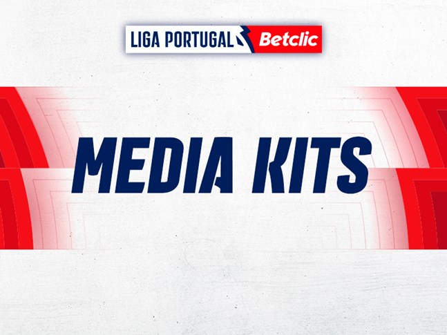
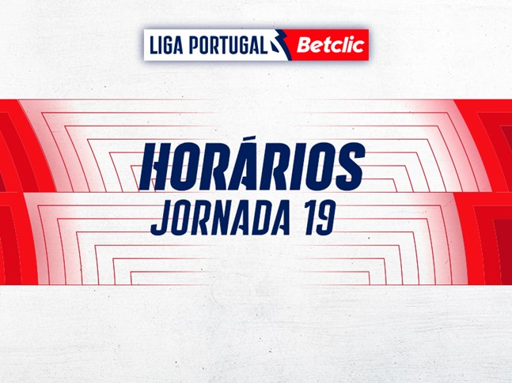
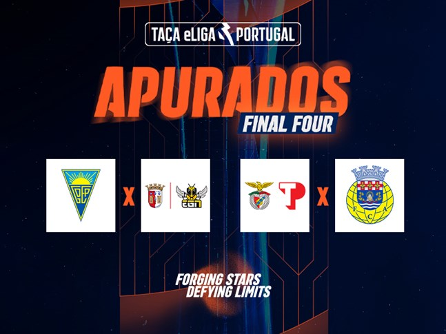
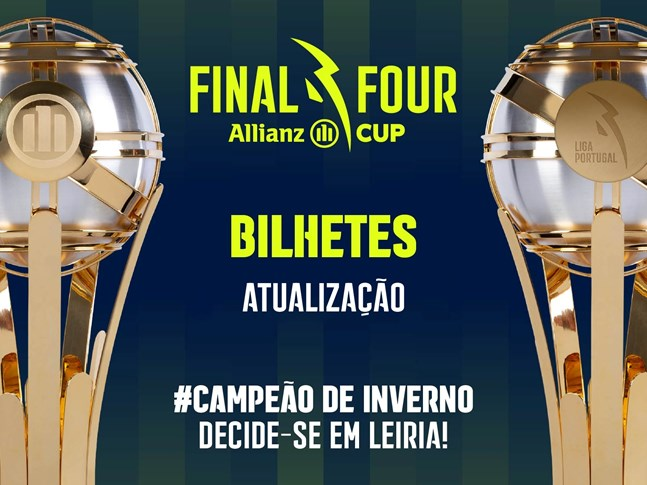
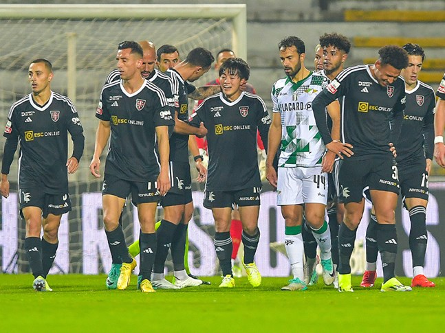
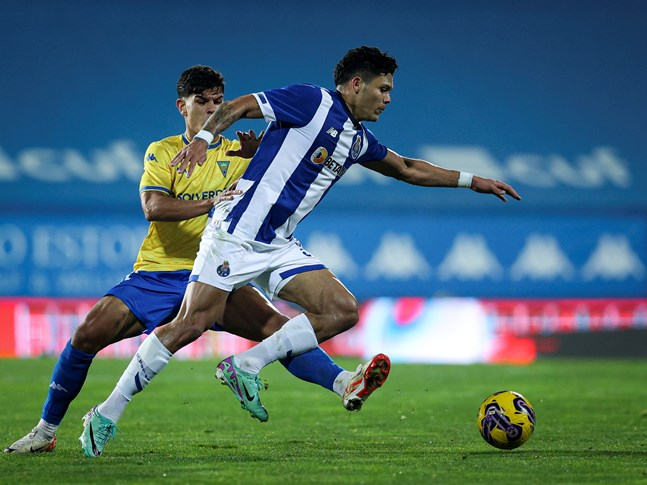

LIGA PORTUGAL BETCLIC
Jornada 19 arranca a 28 de janeiro
Quatro jogos da Liga Portugal Betclic já com data e horas definidas
 LIGA PORTUGAL BETCLICCasapianos intratáveis em Moreira de Cónegos
Reviravolta da equipa orientada por Pedro Moreira redundou num triunfo por 1-4
 LIGA PORTUGAL BETCLICConhecidos os apurados para os quartos de final da Taça de Portugal
Sporting CP, FC Porto, UD Leiria, Gil Vicente FC, FC Vizela, SL Benfica, Santa Clara e Vitória SC carimbaram o passaporte